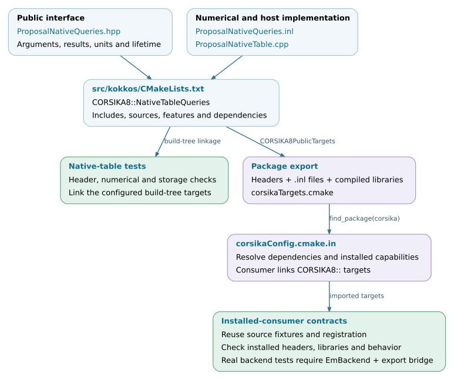

Code organization and modification guide
Start from the operation being changed, then follow its caller and data preparation. The files below separate application configuration, numerical calculations and execution. This makes it possible to review a physics fix without also redesigning the application or scheduler.
Repository layout
applications/ # Construct scenes and run events
corsika/kokkos/ # Public integration interfaces
corsika/detail/kokkos/ # Inline and template implementations
src/kokkos/ # Compiled implementations and targets
tests/kokkos/ # Component and device tests
tests/application_support/ # Application and coordinator tests
cmake/ # Build, export and consumer checks
documentation/kokkos/ # User and maintainer documentation
The native interfaces remain under corsika/framework, corsika/media
and corsika/modules. Their presence outside kokkos does not mean they
are unused: the host adapters connect to these interfaces. The library layout
identifies the shared modules and the atmosphere, ice and firn subdirectories.
Public declarations use .hpp files. Inline/template definitions normally
mirror the header path under corsika/detail/kokkos with an .inl suffix;
compiled definitions live under src/kokkos. For example,
ParticleSoA.hpp includes corsika/detail/kokkos/data/ParticleSoA.inl,
whereas Runtime.hpp is implemented in src/kokkos/runtime/Runtime.cpp.
Modification map
Intended change |
Implementation to inspect first |
Related code and checks |
|---|---|---|
Application inputs or backend selection |
Application integration; application-support tests. Keep device scheduling in the library. |
|
Particle fields, units or coordinates |
Public records in |
Particle data and state; conversion, storage and CPU/device transfer tests. |
Density, geometry or node search |
|
Environment and geometry; host and device environment tests. |
Table lookup or continuous loss |
ProposalNativeQueries.inl, ContinuousPhysicsQueries.inl and LeptonContinuousStep.inl. |
Physics models and table preparation, Transport and interaction kernels; table and continuous tests. |
Interaction selection or secondary generation |
|
Photon transport and interaction completion; selection, final-state and CPU fallback tests. |
Radio projection or propagation |
|
Radio calculation; projection, accumulation and propagation tests. |
Batch dispatch or worker coordination |
BackendInstanceImplementation.inl, EmRouter.inl and AirShowerCoordinator.cpp. |
Execution and scheduling; queue, session and coordinator tests, followed by event-level checks when execution order changes. |
The directory name alone is not enough to choose a file. Read the function’s caller to establish which values it receives and which outputs the next stage uses. The API reference links declarations to the corresponding component explanations.
Example: changing continuous-energy-loss calculations
query_energy_after_continuous_loss accepts a continuous-physics view, a
particle code, initial energy in MeV and traversed grammage in g/cm². It returns
a TableQueryResult containing a value and status.
evaluate_lepton_continuous_loss calls this query and handles the transport
cut and fallback result. The native PROPOSAL calculators and their exported
range tables are prepared separately.
For a change in range inversion, begin in ContinuousPhysicsQueries.inl and the native table queries it calls. For a change in how the step handles a cut, begin in LeptonContinuousStep.inl. Neither change normally belongs in the application or backend factory.
Use the same table and input values to compare the old and new result,
including zero grammage and the transport endpoint. Existing checks are in
tests/kokkos/em/continuous/testContinuousQueries.cpp,
testContinuousContracts.cpp and testContinuousQueriesDevice.cpp.
If the intended numerical result changes, also compare with the native
calculator or an independent reference. A preserved implementation fixture
alone cannot establish that a new physical result is correct.
Coding and build conventions
Follow the official C8 coding conventions for new code, including naming,
header organization and public API documentation. State input units, returned
values, ownership and failure behavior where relevant. Use the repository’s
.clang-format and inspect only the intended changes before submission.
The existing formatter is do-clang-format.py; its default selection is
relative to local master, so check that selection before using --apply.
The guide’s source baseline uses C++17, while the linked upstream convention page specifies C++23. Follow the actual target branch’s build requirements; a language-standard upgrade requires its own compiler/dependency review. See Configuring development builds for the supported configuration at this baseline.
When adding files, update the responsible target in src/kokkos/CMakeLists.txt
or its included CMake modules. Keep Kokkos optional for native-only consumers.
Public headers that include .inl implementations require both paths in the
installation. A new dependency or exported target therefore needs an
installed-consumer check as well as a successful application build.
Preparing the review
A useful change description states the triggering input or requested feature, the resulting behavior, and the execution paths tested. Link the nearest component tests and record the configuration used. Numerical or scheduling changes need the corresponding checks in Testing and benchmarking; purely structural changes should preserve the existing results.
Keep independent reference fixtures unchanged unless the reference itself is being corrected, with evidence for that correction. Update the public header and component documentation alongside an interface change. Avoid combining a file reorganization, numerical optimization and scheduling redesign in one patch: reviewers need to identify which change affects the results.
Library and installation checks
The following diagram shows the native-table component as an example of the path from source to an installed consumer. The checks available in a build depend on its enabled targets; Running and extending the tests lists their registration conditions.


SVG ·
DOT source.